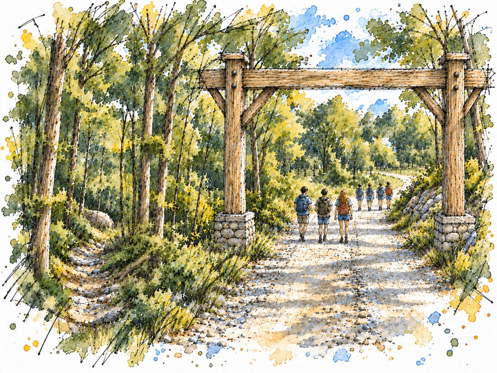
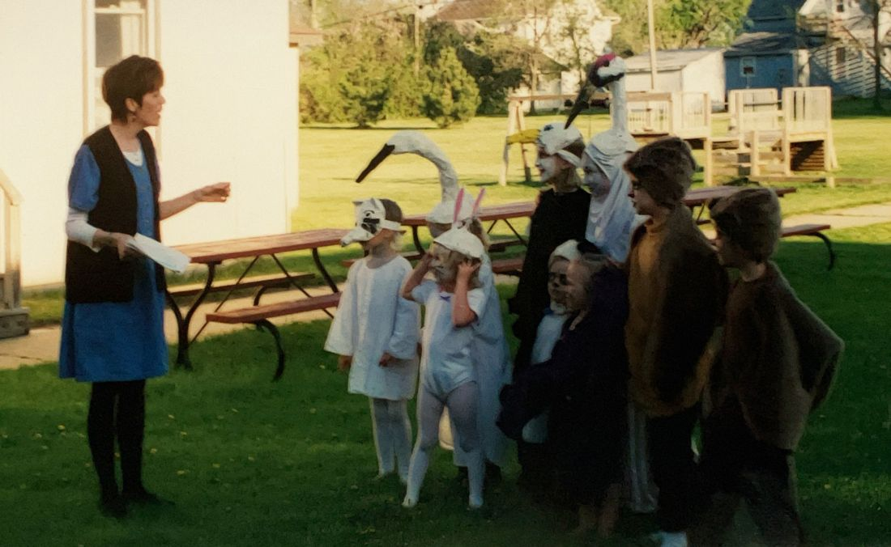
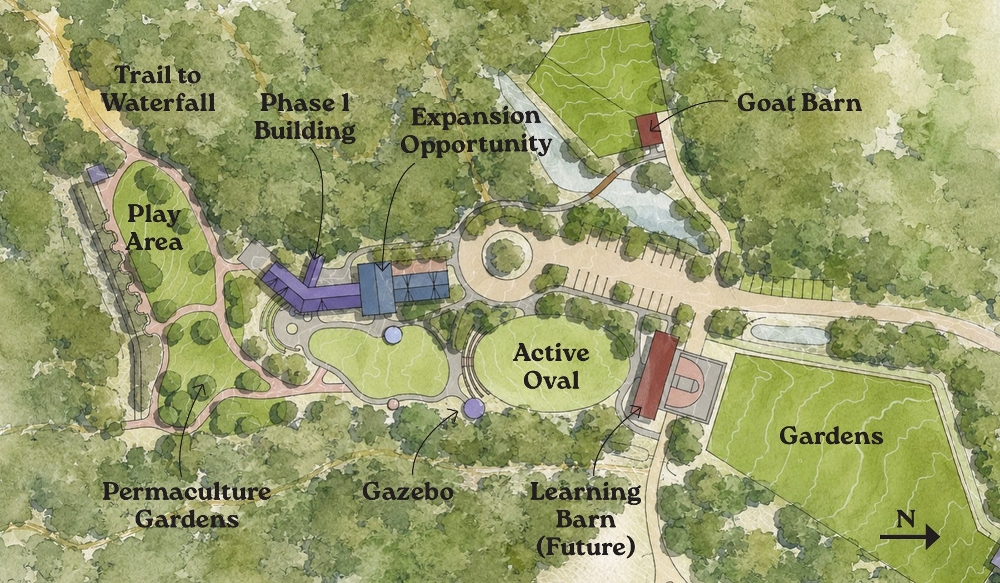
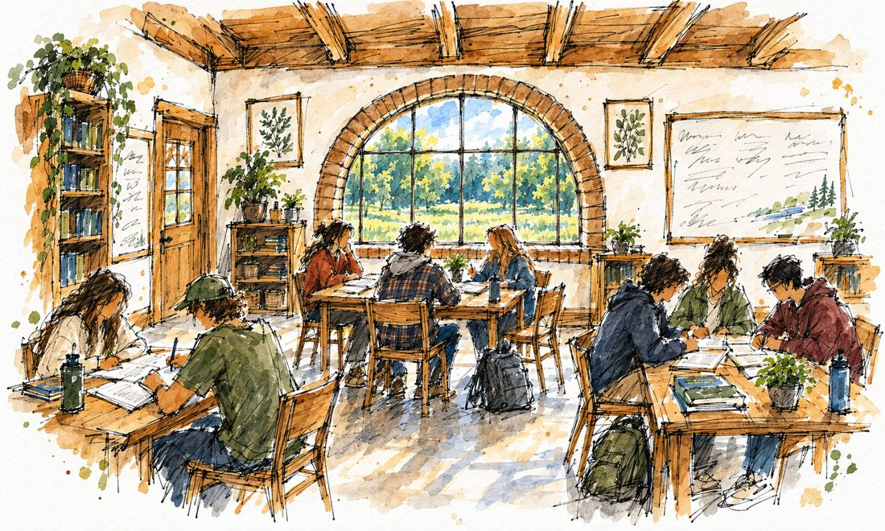
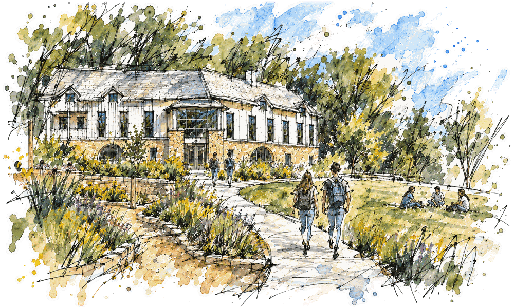

Whole-person learning, rooted in place
We are a developing secondary school for students ages 12–18, rooted in the Canoe Creek watershed and the broader Decorah community. Our anticipated opening is fall 2027.
Our vision
Canoe Valley School envisions a community where learning is a whole-person, lived experience, rooted in place, shaped by human and nonhuman relationships, and carried forward by the curiosity and agency of young people.

The need
Decorah has a long history of educational experimentation rooted in community initiative, family leadership, and a desire for learning that serves the whole child. Families who value holistic, place-based, hands-on, and student-centered learning often find strong choices for early childhood and elementary years, but far fewer pathways for middle and high school students. Canoe Valley School answers this gap.

Learning at Canoe Valley
- Projects, not classes
- Students learn through interdisciplinary projects that replace traditional classes, balancing their own interests with teacher-initiated project arcs.
- One-on-one mentorship
- Students and teachers meet regularly to support project design, competency pathways, problem-solving, and emotional wellbeing.
- Portfolios, not single grades
- Learning is documented through multimedia portfolios and written narratives that show growth over time.
- A 40+ acre classroom
- Gardens, pasture, orchard, woodland, and farm spaces become living settings for learning.
About the school
Canoe Valley School aims to support students as they cultivate their whole selves and their connection to place, so they can find their path in life and proceed boldly, with creativity, care, and competency. The school is governed by a Board of local parents and educators.

In their words
“As a homeschooling parent, I’m excited to have a secondary school option that aligns more closely with our family values than traditional school. I share in Canoe Valley School’s vision of creating belonging and learning in community from a variety of teachers, elders, and community members while allowing spaciousness and choice for students to pursue their own interests. Adolescence is an important time of growth and identity formation and I think Canoe Valley can provide the balance of structure and freedom necessary for my kids to create a strong sense of self as they grow into adulthood.”
“Having a place for our young people to grow and explore who they are in the world is a cornerstone for building the world we want to see. Knowing this community is working so hard to bring Canoe Valley School to life gives me so much hope for the future. We are creating a place not just for learning, but for community, growth, connection, and so much more. I cannot wait to see this school and the kids it will support in action!”
Enrollment
We are welcoming enrollment interest from families of students aged 12–18 for our anticipated fall 2027 opening. We aspire to a first-year enrollment of approximately 15–20 students, growing within a few years to about 30–40 in two mixed-age programs, a lower and an upper level.

Support the school
Our Phase 1 goal is to raise $300,000 to prepare Canoe Valley School for its first students, including renovating the ground floor of the existing building to create two classrooms. Every gift, no matter how large or small, helps build a school rooted in this place and sustained by the community it serves.
